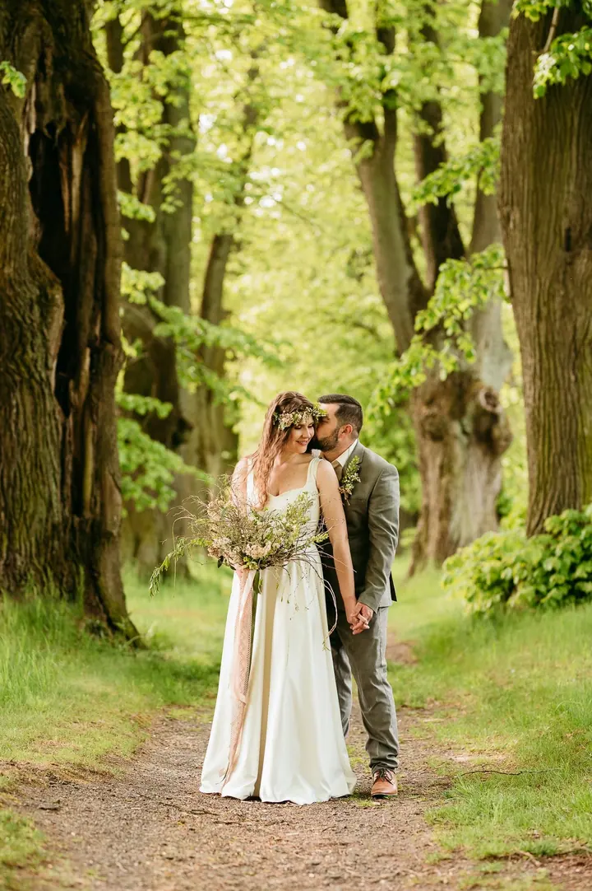
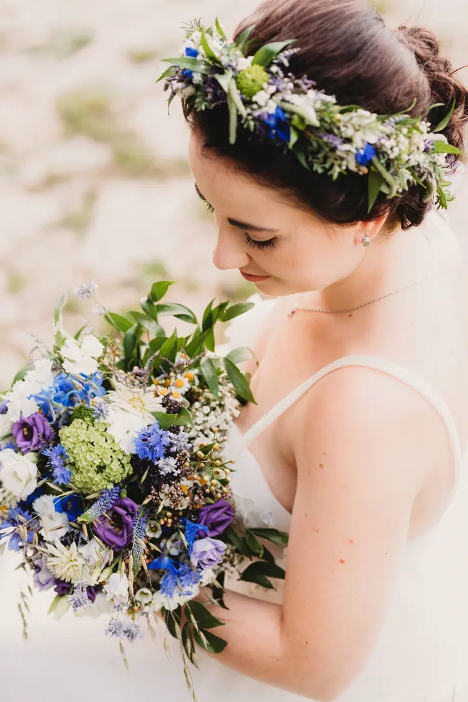
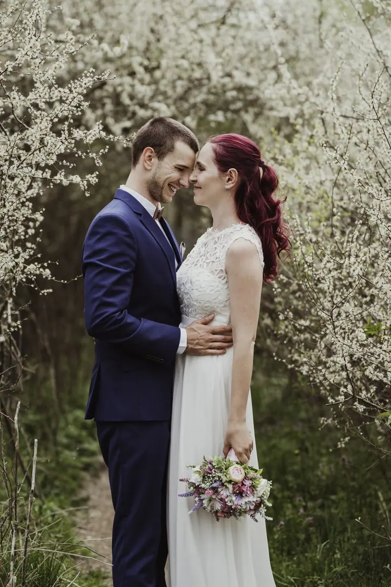
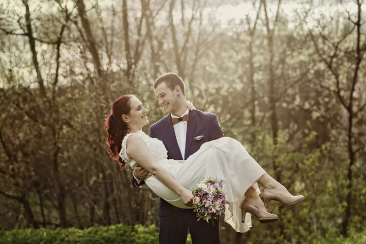

jedna
Svatby
Fotím svatby v Jihlavě a po celé Vysočině přirozeně, citlivě a v pohodové atmosféře. Zachycuji obřad, novomanželské portréty, detaily i emoce, radost a dojetí, ze kterých se skládá váš svatební příběh.

Svatební a rodinná fotografka · Jihlava, Vysočina

Jmenuji se Lucie Padrnosová a jsem svatební fotografka z Jihlavy. Fotím svatby po celé Vysočině a ve svém ateliéru také těhotné maminky, miminka a rodiny. Miluji opravdové emoce, úsměvy i dojetí.
Více o mně
Co fotím
jedna
Fotím svatby v Jihlavě a po celé Vysočině přirozeně, citlivě a v pohodové atmosféře. Zachycuji obřad, novomanželské portréty, detaily i emoce, radost a dojetí, ze kterých se skládá váš svatební příběh.
U mě v ateliéru, venku v přírodě nebo přímo u vás doma. Jemně vás navedu do přirozených póz a v ateliéru si můžete vyzkoušet jedny ze čtyř těhotenských šatů.
Přirozené rodinné fotografie bez složitého polohování, v ateliéru nebo u vás doma. Bezpečnost, pohodlí a potřeby miminka jsou pro mě vždy na prvním místě.
Klidné a přirozené rodinné focení v mém ateliéru v Jihlavě. Na podzim připravuji vánoční scénky s dekoracemi a hračkami, které děti většinou hned zaujmou.
Až jednou otevřete album, ať všechny emoce znovu ožijí.

Za objektivem
Jsem fotografka z Jihlavy a pod značkou Kouzelný objektiv fotím svatby po celé Vysočině. Bude mi velkým potěšením být součástí jednoho z nejdůležitějších dnů vašeho života. Fotím nejen obřad a novomanželské portréty, ale hlavně emoce, radost, dojetí a drobné detaily, které tvoří váš svatební příběh.
Za roky fotografování svateb jsem poznala spoustu krásných míst. Mou absolutní srdcovkou je Zámecká stáj Plandry kousek od Jihlavy, kde znám každý kout i to nejlepší světlo. Ráda ale fotím i na Šejdorfském mlýně, v Hotelu Rytířsko, na Medličkách nebo na Samotě jak víno.
Ve svém ateliéru na Mostecké ulici v Jihlavě fotím také těhotné maminky, novorozence a rodiny. Miminka fotím už přes deset let a absolvovala jsem několik specializovaných kurzů zaměřených na bezpečné focení novorozenců i na focení těhotných žen. Ráda vás provedu celým obdobím od těhotenského bříška až po první dny s miminkem.
Lucie
Pokud vás můj styl osloví, napište mi přes rezervační formulář termín a místo vaší svatby.
Společně projdeme vaše přání, harmonogram svatebního dne i všechno, co vás zajímá. Když teprve vybíráte místo, ráda vám poradím s lokalitami na Vysočině.
Fotím přirozeně a v pohodové atmosféře. Obřad, portréty, detaily i emoce vašich blízkých, aby vznikl celý váš příběh.
Fotky pečlivě upravím tak, abyste se k nim mohli s láskou vracet i po mnoha letech a všechny emoce ve vás znovu ožily.
Portfolio
Otázky
Fotím svatby v Jihlavě a kdekoliv na Vysočině. Dobře znám třeba Zámeckou stáj Plandry, Šejdorfský mlýn, Hotel Rytířsko, Medličky, Tři Věžičky, Hanesův mlýn nebo Hospodářský dvůr Bohuslavice.
Určitě. Nemusíte mít žádné zkušenosti před fotoaparátem. Jemně vás navedu do přirozených póz, pomohu s postojem i výrazy a pracuji s lichotivými úhly a světlem.
Focení trvá přibližně 1 až 1,5 hodiny, ale vždy se řídím potřebami miminka. Kdykoliv je potřeba nakojit, přebalit nebo pochovat, uděláme si pauzu. Fotit můžeme u mě v ateliéru nebo u vás doma.
Ano, dárkové poukazy na focení nabízím. Všechny informace k nim najdete na mém blogu.
Napište pár vět o tom, co si představujete. · +420 605 500 498